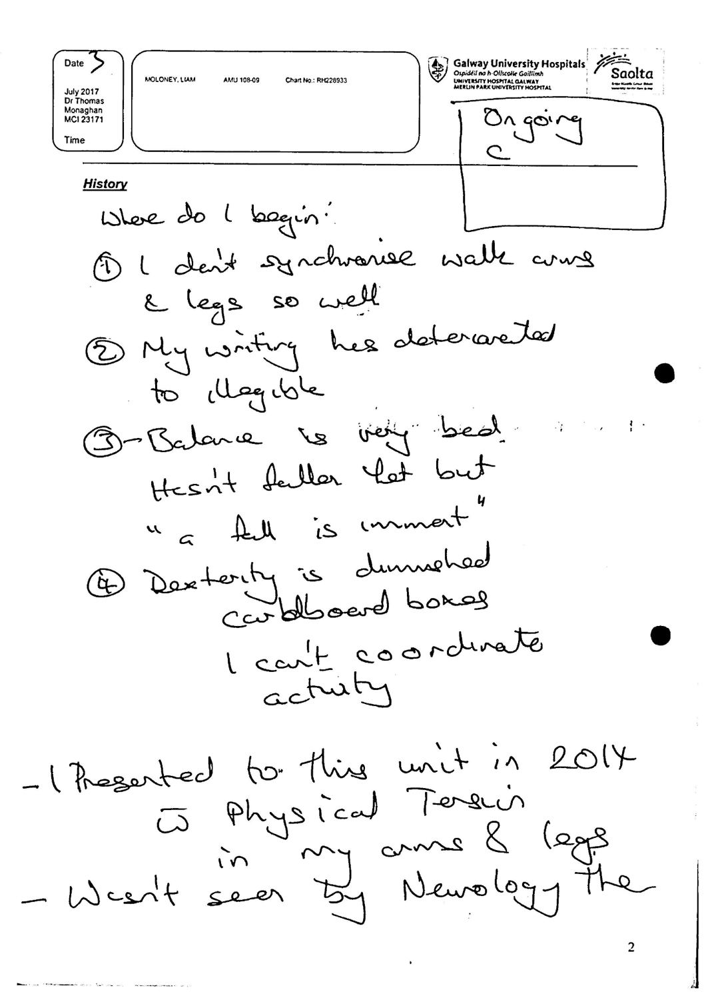
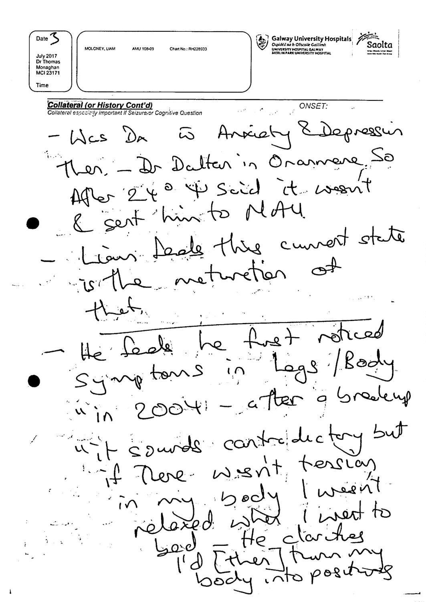
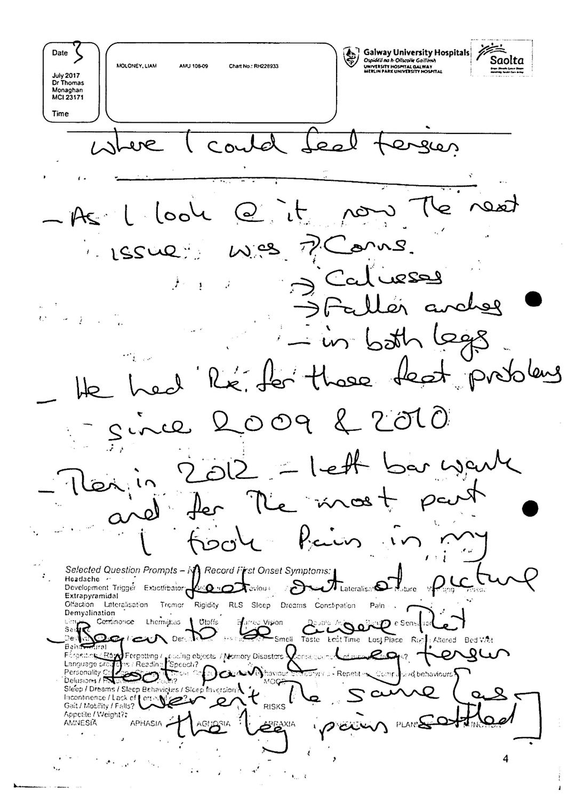

Original-source exhibit · 3 July 2017
The Smoking Gun
— the handwritten history
What the neurologist wrote at the start of admission, what was carried into onward referrals, and what changed in the completed clinical formulation.
Editorial framing: “The Smoking Gun” is the patient's description of this pivotal documentary trail. The exhibit demonstrates a traceable sequence of representations; it does not by itself establish that a change was intentional or dishonest.
The starting point
Three handwritten interview pages
These original pages, dated 3 July 2017, are preserved in the patient's possession and reproduced in the public documentary collection. They establish that the clinician recorded a prior presentation in 2014, the patient's view that the present condition was the maturation of that earlier problem, and an onset of leg/body symptoms around 2004. The third page also records the progression of foot lesions and a distinction between the sensations of pain and tension.
“Liam feels this current state is the maturation of that.”

Page 1 · The 2014 presentation“I presented to this unit in 2014 with physical tension in my arms & legs. Wasn't seen by Neurology then.”
Read Document 5 and transcription
Page 2 · Continuity and earliest onset“Liam feels this current state is the maturation of that.” The note then traces leg/body symptoms to 2004.
Read Document 6 and transcription
Page 3 · The foot-history distinction“Began to be aware that foot pain & leg tension weren't the same [as the leg pain settled].”
Read Document 7 and transcription Images are the original handwritten-page assets; the quoted wording follows the source transcription. Square-bracketed phrases in the transcription indicate editorial clarification and should not be mistaken for literal handwritten wording.
What survives, what changes
A documentary trail across four distinct records
The important finding is not that the clinician forgot a long history. His onward communications retained the long duration, while the final clinical formulation framed the relationship between painful feet and leg tension in stronger terms than the handwritten symptom account itself.
01 · 3 July · Handwritten
The patient's account of continuity
“Liam feels this current state is the maturation of that.”
The note links the 2017 presentation back to 2014, with leg/body symptoms originating around 2004. It records the patient's understanding of one developing history, not a definitive diagnosis of the foot pain.
Document 6 — original transcription
02 · 2017 · Typed clinical synthesis
A stronger symptom separation
“in his own mind - markedly divorced the feelings of tension in the legs”
The completed account advances the possibility that foot symptoms were separate or due to peripheral neuropathy, while retaining uncertainty (“Not clear”). The comparison is between the patient's described experiences and the clinician's later causal formulation.
Document 4 — clinical account
03 · 2017 · Specialist correspondence
Thirteen years conveyed to Healy
“symptoms of Parkinson's for the last 13 years”
Monaghan explicitly carried a long symptom history into his request for genetic guidance and a specialist opinion. The letter does not itself establish an integrated assessment of the painful-foot problem.
Document 9 — Monaghan to Healy
04 · 13 July · DaTscan record
Thirteen years and dystonic-looking gait
“Some form of symptoms for up to 13 years now.”
The DaTscan clinical indication also described the walk as “almost dystonically unusual.” The scan was performed on 13 July, after discharge on 11 July; the available source does not establish the order-entry date.
Document 8 — DaTscan indicationWhat this establishes: a continuous history was recorded at interview and used in later clinical communications. What remains to be examined: how the completed narrative moved from the patient's distinction between sensations to a potentially separate causal explanation for the feet, and whether the linked referral question received an adequate clinical answer.
The intervening decision
The 10 July objection and the completed account
In his signed statement dated 2 September 2026, the patient gives firsthand testimony that he directly challenged the treating consultant on 10 July 2017, while still admitted and facing discharge the following day, because the feet had not been adequately investigated. The completed consultant account does not record that objection while describing the patient's understanding and the assessment plan.
Read the source sequence together: the GP referral, the handwritten interview, the final hospital account, the patient's signed statement and the expert questions. The significance of the objection and its absence from the final account is not reduced to a question of whether the patient knew he had Parkinsonism.
The question raised by the manuscript
What should an independent expert examine?
Why was a developing 2004–2014–2017 neurological history explicitly preserved in the clinician's handwritten notes and in referrals concerning Parkinsonism, while the account of the painful feet developed into a separate, uncertain explanation? What clinical examination and reasoning justified that separation, and what happened after the patient directly objected before discharge?
The original handwriting is the entry point. The comparison with the typed synthesis, Healy correspondence, DaTscan indication and discharge plan makes the question independently examinable.